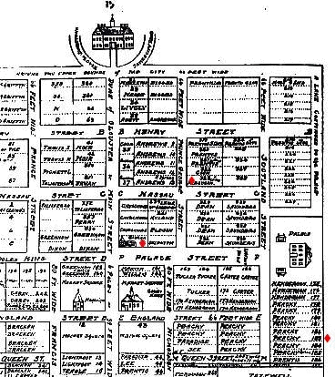

Williamsburg, VA
This is a fragment of an 18th
century map of Williamsburg, VA. We hated to crop the image but did
not want to make people wait for an eternity for the picture to load.
tThe upper most dot shows
location of Lot 323 owned by William Pegram. The original house can still be seen.
tThe second dot located on Nassau shows location of Bruton Parrish
Church
tThe third dot below the Governor's Palace shows
location of Lot 183 owned by Daniel and Sarah Pegram.
